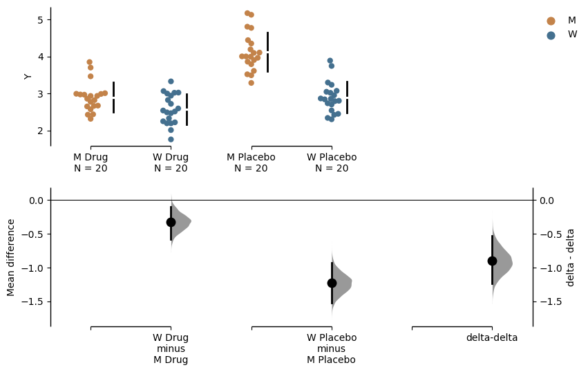
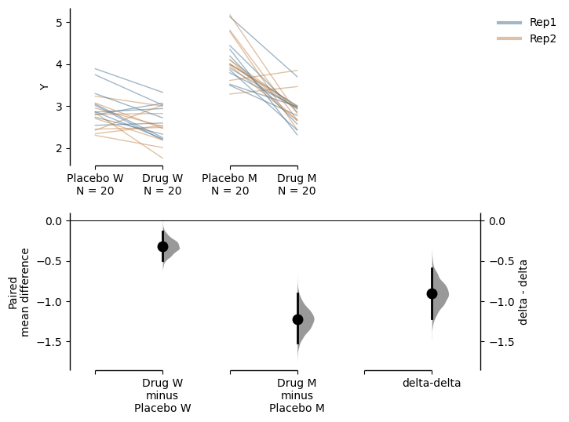
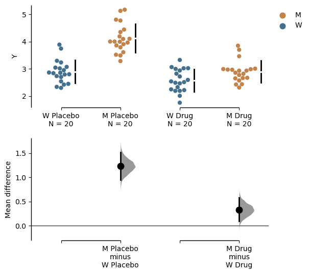
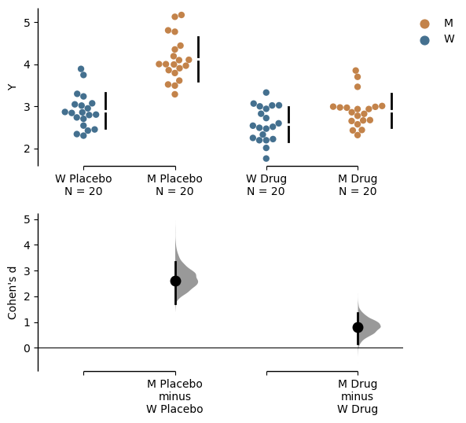

import numpy as np
import pandas as pd
import dabest
print("We're using DABEST v{}".format(dabest.__version__))We're using DABEST v2023.02.14Since version 2023.02.14, DABEST also supports the calculation of delta-delta, an experimental function that allows the comparison between two bootstrapped effect sizes computed from two independent categorical variables.
Many experimental designs investigate the effects of two interacting independent variables on a dependent variable. The delta-delta effect size lets us distill the net effect of the two variables. To illustrate this, let’s delve into the following problem.
Consider an experiment where we test the efficacy of a drug named Drug on a disease-causing mutation M based on disease metric Y. The greater value Y has the more severe the disease phenotype is. Phenotype Y has been shown to be caused by a gain of function mutation M, so we expect a difference between wild type (W) subjects and mutant subjects (M). Now, we want to know whether this effect is ameliorated by the administration of Drug treatment. We also administer a placebo as a control. In theory, we only expect Drug to have an effect on the M group, although in practice many drugs have non-specific effects on healthy populations too.
Effectively, we have 4 groups of subjects for comparison.
| Wildtype | Mutant | |
|---|---|---|
| Drug | XD, W | XD, M |
| Placebo | XP, W | XP, M |
There are 2 Treatment conditions, Placebo (control group) and Drug (test group). There are 2 Genotype: W (wild type population) and M (mutant population). In addition, each experiment was done twice (Rep1 and Rep2). We shall do a few analyses to visualise these differences in a simulated dataset.
import numpy as np
import pandas as pd
import dabest
print("We're using DABEST v{}".format(dabest.__version__))We're using DABEST v2023.02.14from scipy.stats import norm # Used in generation of populations.
np.random.seed(9999) # Fix the seed so the results are replicable.
# Create samples
N = 20
y = norm.rvs(loc=3, scale=0.4, size=N*4)
y[N:2*N] = y[N:2*N]+1
y[2*N:3*N] = y[2*N:3*N]-0.5
# Add a `Treatment` column
t1 = np.repeat('Placebo', N*2).tolist()
t2 = np.repeat('Drug', N*2).tolist()
treatment = t1 + t2
# Add a `Rep` column as the first variable for the 2 replicates of experiments done
rep = []
for i in range(N*2):
rep.append('Rep1')
rep.append('Rep2')
# Add a `Genotype` column as the second variable
wt = np.repeat('W', N).tolist()
mt = np.repeat('M', N).tolist()
wt2 = np.repeat('W', N).tolist()
mt2 = np.repeat('M', N).tolist()
genotype = wt + mt + wt2 + mt2
# Add an `id` column for paired data plotting.
id = list(range(0, N*2))
id_col = id + id
# Combine all columns into a DataFrame.
df_delta2 = pd.DataFrame({'ID' : id_col,
'Rep' : rep,
'Genotype' : genotype,
'Treatment': treatment,
'Y' : y
})df_delta2.head()| ID | Rep | Genotype | Treatment | Y | |
|---|---|---|---|---|---|
| 0 | 0 | Rep1 | W | Placebo | 2.793984 |
| 1 | 1 | Rep2 | W | Placebo | 3.236759 |
| 2 | 2 | Rep1 | W | Placebo | 3.019149 |
| 3 | 3 | Rep2 | W | Placebo | 2.804638 |
| 4 | 4 | Rep1 | W | Placebo | 2.858019 |
To make a delta-delta plot, you need to simply set delta2 = True in the dabest.load() function. However, here x needs to be declared as a list consisting of 2 elements rather than 1 in most of the cases. The first element in x will be the variable plotted along the horizontal axis, and the second one will determine the colour of dots for scattered plots or the colour of lines for slopegraphs. We use the experiment input to specify grouping of the data.
unpaired_delta2 = dabest.load(data = df_delta2, x = ["Genotype", "Genotype"], y = "Y", delta2 = True, experiment = "Treatment")The above function creates the following object:
unpaired_delta2DABEST v2023.02.14
==================
Good evening!
The current time is Sun Mar 19 23:07:31 2023.
Effect size(s) with 95% confidence intervals will be computed for:
1. M Placebo minus W Placebo
2. M Drug minus W Drug
3. Drug minus Placebo (only for mean difference)
5000 resamples will be used to generate the effect size bootstraps.We can quickly check out the effect sizes:
unpaired_delta2.mean_diffDABEST v2023.02.14
==================
Good evening!
The current time is Sun Mar 19 23:07:42 2023.
The unpaired mean difference between W Placebo and M Placebo is 1.23 [95%CI 0.948, 1.52].
The p-value of the two-sided permutation t-test is 0.0, calculated for legacy purposes only.
The unpaired mean difference between W Drug and M Drug is 0.326 [95%CI 0.0934, 0.584].
The p-value of the two-sided permutation t-test is 0.0122, calculated for legacy purposes only.
The delta-delta between Placebo and Drug is -0.903 [95%CI -1.26, -0.535].
The p-value of the two-sided permutation t-test is 0.0, calculated for legacy purposes only.
5000 bootstrap samples were taken; the confidence interval is bias-corrected and accelerated.
Any p-value reported is the probability of observing the effect size (or greater),
assuming the null hypothesis of zero difference is true.
For each p-value, 5000 reshuffles of the control and test labels were performed.
To get the results of all valid statistical tests, use `.mean_diff.statistical_tests`unpaired_delta2.mean_diff.plot();
In the above plot, the horizontal axis represents the Genotype condition and the dot colour is also specified by Genotype. The left pair of scattered plots is based on the Placebo group while the right pair is based on the Drug group. The bottom left axis contains the two primary deltas: the Placebo delta and the Drug delta. We can easily see that when only the placebo was administered, the mutant phenotype is around 1.23 [95%CI 0.948, 1.52]. This difference was shrunken to around 0.326 [95%CI 0.0934, 0.584] when the drug was administered. This gives us some indication that the drug is effective in amiliorating the disease phenotype. Since the Drug did not completely eliminate the mutant phenotype, we have to calculate how much net effect the drug had. This is where delta-delta comes in. We use the Placebo delta as a reference for how much the mutant phenotype is supposed to be, and we subtract the Drug delta from it. The bootstrapped mean differences (delta-delta) between the Placebo and Drug group are plotted at the right bottom with a separate y-axis from other bootstrap plots. This effect size, at about -0.903 [95%CI -1.26, -0.535], is the net effect size of the drug treatment. That is to say that treatment with drug A reduced disease phenotype by 0.903.
Mean difference between mutants and wild types given the placebo treatment is:
\(\Delta_{1} = \overline{X}_{P, M} - \overline{X}_{P, W}\)
Mean difference between mutants and wild types given the drug treatment is:
\(\Delta_{2} = \overline{X}_{D, M} - \overline{X}_{D, W}\)
The net effect of the drug on mutants is:
\(\Delta_{\Delta} = \Delta_{2} - \Delta_{1}\)
where \(\overline{X}\) is the sample mean, \(\Delta\) is the mean difference.
In the example above, we used the convention of “test - control’ but you can manipulate the orders of experiment groups as well as the horizontal axis variable by setting experiment_label and x1_level.
unpaired_delta2_specified = dabest.load(data = df_delta2,
x = ["Genotype", "Genotype"], y = "Y",
delta2 = True, experiment = "Treatment",
experiment_label = ["Drug", "Placebo"],
x1_level = ["M", "W"])
unpaired_delta2_specified.mean_diff.plot();
The delta - delta function also supports paired data, which is useful for us to visualise the data in an alternate way. Assuming that the placebo and drug treatment were done on the same subjects, our data is paired between the treatment conditions. We can specify this by using Treatment as x and Genotype as experiment, and we further specify that id_col is ID, linking data from the same subject with each other. Since we have done two replicates of the experiments, we can also colour the slope lines according to Rep.
paired_delta2 = dabest.load(data = df_delta2,
paired = "baseline", id_col="ID",
x = ["Treatment", "Rep"], y = "Y",
delta2 = True, experiment = "Genotype")
paired_delta2.mean_diff.plot();
We see that the drug had a non-specific effect of -0.321 [95%CI -0.498, -0.131] on wild type subjects even when they were not sick, and it had a bigger effect of -1.22 [95%CI -1.52, -0.906] in mutant subjects. In this visualisation, we can see the delta-delta value of -0.903 [95%CI -1.21, -0.587] as the net effect of the drug accounting for non-specific actions in healthy individuals.
Mean difference between drug and placebo treatments in wild type subjects is:
\[\Delta_{1} = \overline{X}_{D, W} - \overline{X}_{P, W}\]
Mean difference between drug and placebo treatments in mutant subjects is:
\[\Delta_{2} = \overline{X}_{D, M} - \overline{X}_{P, M}\]
The net effect of the drug on mutants is:
\[\Delta_{\Delta} = \Delta_{2} - \Delta_{1}\]
where \(\overline{X}\) is the sample mean, \(\Delta\) is the mean difference.
The configuration of comparison we performed above is reminiscent of a two-way ANOVA. In fact, the delta - delta is an effect size estimated for the interaction term between Treatment and Genotype. Main effects of Treatment and Genotype, on the other hand, can be determined by simpler, univariate contrast plots.
If for some reason you don’t want to display the delta-delta plot, you can easily do so by
unpaired_delta2.mean_diff.plot(show_delta2=False);
Since the delta-delta function is only applicable to mean differences, plots of other effect sizes will not include a delta-delta bootstrap plot.
unpaired_delta2.cohens_d.plot();
You can find all outputs of the delta - delta calculation by assessing the attribute named delta_delta of the effect size object.
unpaired_delta2.mean_diff.delta_deltaDABEST v0.0.1
=============
Good evening!
The current time is Sun Mar 12 00:55:42 2023.
The delta-delta between Placebo and Drug is -0.903 [95%CI -1.26, -0.535].
The p-value of the two-sided permutation t-test is 0.0, calculated for legacy purposes only.
5000 bootstrap samples were taken; the confidence interval is bias-corrected and accelerated.
Any p-value reported is the probability of observing theeffect size (or greater),
assuming the null hypothesis ofzero difference is true.
For each p-value, 5000 reshuffles of the control and test labels were performed.delta_delta has its own attributes, containing various information of delta - delta.
difference: the mean bootstrapped differences between the 2 groups of bootstrapped mean differencesbootstraps: the 2 groups of bootstrapped mean differencesbootstraps_delta_delta: the bootstrapped differences between the 2 groups of bootstrapped mean differencespermutations: the mean difference between the two groups of bootstrapped mean differences calculated based on the permutation datapermutations_var: the pooled group variances of two groups of bootstrapped mean differences calculated based on permutation datapermutations_delta_delta: the delta-delta calculated based on the permutation datadelta_delta.to_dict() will return to you all the attributes in a dictionary format.